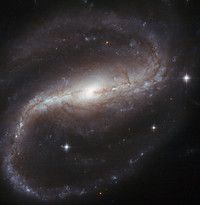
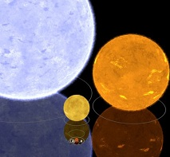
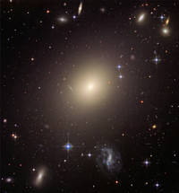
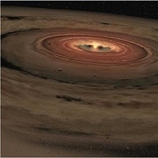

Tähtitieteellisen tutkimuksen piiriin kuuluu aivan kaikki ilmakehän ulkopuolella oleva -- Kuu, oma aurinkokuntamme, sen lähitähdet, oma galaksimme Linnunrata, sen naapurigalaksit ja koko universumin galaksipaljous.
Aina 1600-luvulle saakka kaikki tähtitieteelliset havainnot piti tehdä paljain silmin. Kaukoputken keksimisen myötä saatettiin nähdä kauempana olevia ja himmeämpiä kohteita, ja maailmankuvamme mullistui. Maa ei ollutkaan maailmankaikkeuden keskipiste, vaan planeettamme kiersikin Aurinkoa, joka sekin oli vain yksi monista tähdistä Linnunradan tähtimuodostelmassa.
Valokuvauksen keksiminen 1800-luvun alkupuolella mullisti tähtitieteen uudelleen. Entistä himmeämpiä kohteita saatiin havaittua, kun niistä voitiin tehdä pitkiä valotuksia. Lisäksi taivaan kohteet saatiin nyt ikuistettua jälkipolville ja niissä tapahtuvat muutokset voitiin huomata. näin löytyi esim. kääpiöplaneetta Pluto, pieni liikkuva piste tähtimeren seassa.
Radiotähtitiede keksittiin, kun sotilaskäyttöön kehitetty radioantenni havaitsi Linnunradan keskuksesta tulevaa radiosäteilyä. Jo aiemmin oli ymmärretty, että näkyvä valo on vain yksi kapea siivu säteilystä, jota sähkö ja magnetismi aiheuttavat.
Radiotähtitiede avasi tietä uusille havaintomenetelmille kuten infrapunatähtitieteelle ja röntgentähtitieteelle. Nämä keksinnöt avasivat meille viimein ikkunan maailmankaikkeuteen, joka oli ollut meiltä aiemmin piilossa. Ymmärtämyksemme maailmankaikkeudesta on syventynyt merkittävästi näiden uusien havaintojen valossa.
Tähtitiede on kuitenkin edelleen myös sitä, että menee ulos pimeän aikaan ja katsoo omin silmin taivaalle. Kuun vaiheet, kuun- ja auringonpimennykset, meteoriparvien aiheuttamat tähdenlennot ja useimmat planeetat näkyvät hyvin myös paljain silmin. Toisinaan taivaan halki saattaa kulkea komeetta upeine pyrstöineen, ja revontulia näkyy taivaalla Etelä-Suomessakin, kun Auringon magneettinen aktiivisuus on huipussaan.
Ammattitason tähtitiedettä voi edistää toisinaan myös harrastajavoimin. Jos omassa käytössä on kaukoputki, sen avulla voi tehdä sellaisia pitkäkestoisia tai nopeita havaintoja, joihin ammattilaislaitteet eivät ehdi. Tällä tavalla ovat suomalaisetkin tähtiharrastajat olleet mukana esimerkiksi gammapurkausten ja supernovien ammattitutkimuksessa.

Tähdet syntyvät, kun tähtienvälinen kaasu- ja pölypilvi luhistuu kasaan. Pilvi koostuu pääasiassa vedystä, joka on kaikkein kevyin alkuaine. Mukana on myös heliumia, pölyä (noin yksi prosentti) ja hiukan raskaampia alkuaineita.
Jos luhistuva pilvi on kovin pieni, tähtiä syntyy ehkä vain yksi, mutta toisinaan hyvin suuret pilvet alkavat luhistua ja tähtiä syntyy runsaasti. Usein puhutaankin tähtien syntyalueista. Valtaosa tähdistä löytyy systeemeistä, joissa toisiaan kiertää kaksi tai useampia tähtiä.
Kun pilvi luhistuu, sen ytimeen alkaa tiivistyä tähti (tai useampia tähtiä). Vaikuttaa siltä, että tähtien syntyessä niitten ympärille muodostuu pilven materiaalista hyvin yleisesti myös yksi tai useampia planeettoja. Tähdet ja planeetat siis syntyvät yhdessä.
Kun muodostumassa oleva tähti kerää lisää massaa emopilvestään, lämpötila sen ytimessä nousee. Jos tähti kerää tarpeeksi massaa (noin 18 prosenttia Auringon massasta), vety alkaa fuusioitua heliumiksi. Ellei massa riitä lämpötilan nostamiseen näin ylös, lopputuloksena on ns. ruskea kääpiö, joka säteilee hiljaksiin lämpöenergiaansa avaruuteen.
Kun vedyn fuusio on alkanut tähden ytimessä, tähteä aletaan kutsua pääsarjan tähdeksi. Kaikki tähdet massastaan riippumatta viettävät pääosan elinkaarestaan pääsarjassa muuttaen vetyä heliumiksi ja säteillen ulos fuusioprosesseissa muodostunutta energiaa. Mitä enemmän massaa tähdellä on, sitä kiivaammin se muuttaa vetynsä heliumiksi. Raskaimmissa tähdissä ytimen lämpötila on niin korkea, että myös helium ja sitä raskaammat alkuaineet fuusioituvat ja tuottavat energiaa. Vasta rauta on alkuaineena sellainen, että sen ydinten liittäminen yhteen kuluttaa energiaa enemmän kuin tuottaa sitä, joten raudan fuusiota ei enää tapahdu tähdissä.

Galaksit ovat valtavia kaasusta, pölystä, pimeästä aineesta ja tähdistä muodostuneita rakenteita, joita painovoima pitää kasassa. Maailmankaikkeudessa arvellaan olevan ainakin 170 miljardia galaksia.
Ensimmäiset galaksit muodostuivat alle miljardin vuoden kuluttua alkuräjähdyksestä, kun universumin täyttäneessä kaasussa olevat pienet tihentymät alkoivat tiivistyä entisestään painovoiman vaikutuksesta.
Galakseja on monen kokoisia ja näköisiä. Tutunnäköiset spiraaligalaksit muodostavat epäsäännöllisten galaksien kanssa yhteensä noin 60 prosenttia kaikista tunnetun avaruuden galakseista.
Spiraaligalaksit ovat litteän kiekkomaisia. Niitten spiraalihaaroissa syntyy runsaasti nuoria tähtiä. Spiraalihaarojen välissä on hiukan vanhempia tähtiä, ja galaksien keskusaluetta kiertää vanhoja tähtiä. Monien spiraaligalaksien keskusalue on sauvamaisen muotoinen, ja näitä galakseja kutsutaan sauvaspiraaligalakseiksi. Myös oman galaksimme Linnunradan on huomattu olevan sauvaspiraaligalaksi. Aurinkokunta sijaitsee Linnunradan kiekon tasossa, ja meitä ympäröivä kiekko näkyy pimeällä yötaivaalla sumumaisena vanana.
Elliptiset galaksit muodostavat noin 10 - 15 prosenttia kaikista galakseista. Ne ovat joko täysin pallomaisia tai hiukan pitkulaisia tähtimuodostelmia, joiden tähdet ovat pääasiassa vanhoja. Elliptisissä galakseissa on hyvin vähän kaasua, josta uusia tähtiä voisi muodostua. Universumin kaikkein massiivisimmat galaksit ovat elliptisiä galakseja, ja ainakin osan niistä uskotaan syntyvän galaksien yhteentörmäyksissä.
Useimpien galaksien ytimessä uskotaan olevan supermassiivinen musta aukko. Galakseja ympäröi vaikeasti nähtävissä oleva pallomainen haloksi kutsuttu kehä, jossa on muutamia vanhoja tähtiä, pallomaisia tähtijoukkoja sekä runsaasti pimeää ainetta.

Aurinkokunta muodostui noin 4,57 miljardia vuotta sitten suuren tähtienvälisen kaasupilven luhistuessa. Pilveen syntyi monia tiivistymiskeskuksia, joihin syntyi tähtiä. Oma Aurinkomme oli yksi niistä.
Auringon ympärille muodostui pilven materiaalista kiekko, joka koostui pääasiassa vety- ja heliumkaasusta. Kiekon muodostumiseen meni noin 100 000 vuotta. Joukossa oli myös raskaampia alkuaineita kuten happea, hiiltä ja typpeä sekä erilaisista yhdisteistä muodostunutta pölyä, jota oli kaikesta aineesta noin yksi prosentti. Kun pölyhiukkaset törmäilivät toisiinsa kiekossa, alkoi muodostua suurempia kiinteitä kappaleita. Planeetat muodostuivat niistä miljoonien vuosien törmäilyn seurauksena.
Aurinkokunnassa on kahdentyyppisiä planeettoja: pieniä kiviplaneettoja sekä suuria kaasuplaneettoja. Kaasuplaneetat muodostuivat ensin. Kaasuplaneetat muodostuivat kiekossa ns. jäärajan takana. Siellä etäisyys Auringosta oli niin suuri, että kaasumaiset aineet alkoivat jäätyä ja ne oli helpompaa kaapata planeettojen rakennusaineeksi. Jouduttuaan planeetan pinnalle jäät kaasuuntuivat uudelleen ja muodostivat planeettojen paksut kaasukehät.
Kiviplaneetat ovat muodostuneet pääasiassa aurinkokunnan synnyttäneen pilven vähäisestä pölymäärästä. Ainoastaan Maalla ja Venuksella on merkittävän paksut kaasukehät. Kiviplaneetat muodostuivat sisemmässä aurinkokunnassa, jäärajan sisäpuolella.
Aurinko puolestaan imi itseensä jatkuvasti lisää materiaalia sitä ympäröivästä kiekosta. Lopulta, noin 50 miljoonan vuoden jälkeen, se oli riittävän massiivinen alkaakseen muuttaa vetyä heliumiksi ytimessään. Näin Auringosta tuli täysikasvuinen tähti. Jo tätä ennen se oli kuitenkin puhaltanut voimakkaiden tähtituulien avulla kiekon ympäriltään, jättäen vain planeetat jäljelle.
Lähde: www.ursa.fi